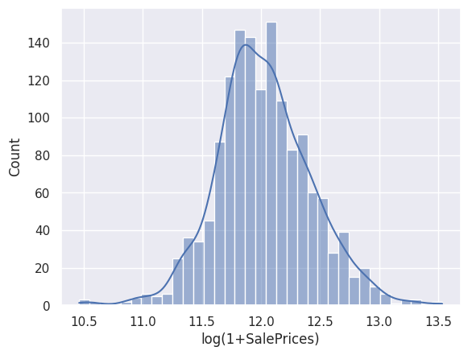
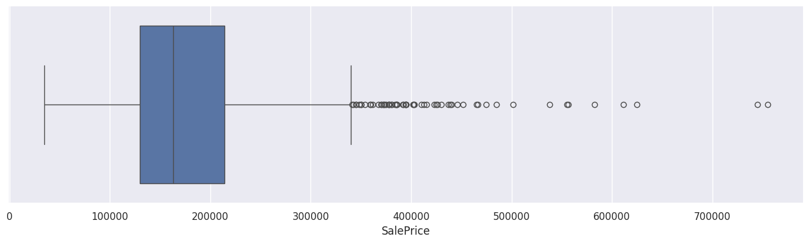
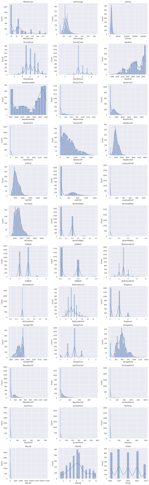
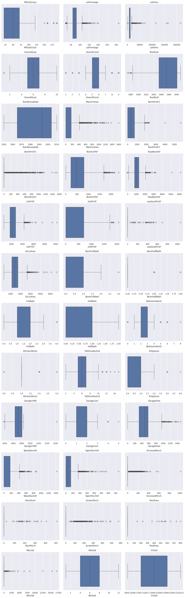
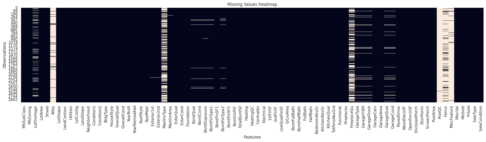
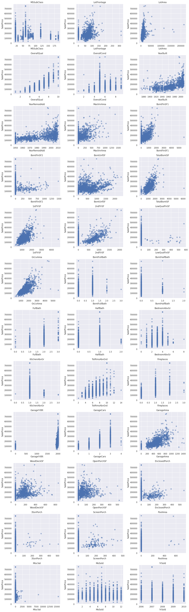
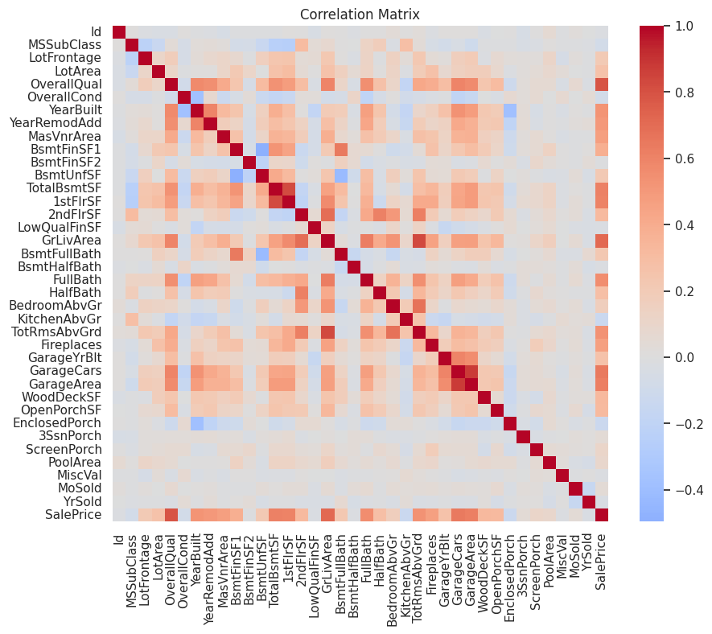

Code
# Import libraries
import pandas as pd
import numpy as np
import matplotlib.pyplot as plt
import seaborn as sns
sns.set_theme()O primeiro passo em qualquer projeto de aprendizado de máquina é compreender os dados.
Neste notebook, iremos:
Primeiro, importamos as bibliotecas que serão utilizadas ao longo da análise.
A competição fornece conjuntos de dados separados para treinamento e teste. O conjunto de treinamento contém a variável alvo (SalePrice), enquanto o conjunto de teste contém apenas as variáveis preditoras.
Nesta etapa, carregamos ambos os conjuntos de dados, inspecionamos suas dimensões, verificamos a existência de linhas duplicadas, conferimos os nomes das colunas e realizamos uma inspeção inicial de sua estrutura.
df_test = pd.read_csv("../data/raw/test.csv")
df_train = pd.read_csv("../data/raw/train.csv")
print(
f"""
--------------------
Train set:
{df_train.shape[0]} rows
{df_train.duplicated().sum()} duplicated rows
{df_train.shape[1]} columns
--------------------
Test set:
{df_test.shape[0]} rows
{df_test.duplicated().sum()} duplicated rows
{df_test.shape[1]} columns
--------------------
Columns train/test:
{[column for column in df_train.columns if column in df_test.columns]}
Target variable (only in test):
{[column for column in df_train.columns if column not in df_test.columns]}
--------------------
"""
)
--------------------
Train set:
1460 rows
0 duplicated rows
81 columns
--------------------
Test set:
1459 rows
0 duplicated rows
80 columns
--------------------
Columns train/test:
['Id', 'MSSubClass', 'MSZoning', 'LotFrontage', 'LotArea', 'Street', 'Alley', 'LotShape', 'LandContour', 'Utilities', 'LotConfig', 'LandSlope', 'Neighborhood', 'Condition1', 'Condition2', 'BldgType', 'HouseStyle', 'OverallQual', 'OverallCond', 'YearBuilt', 'YearRemodAdd', 'RoofStyle', 'RoofMatl', 'Exterior1st', 'Exterior2nd', 'MasVnrType', 'MasVnrArea', 'ExterQual', 'ExterCond', 'Foundation', 'BsmtQual', 'BsmtCond', 'BsmtExposure', 'BsmtFinType1', 'BsmtFinSF1', 'BsmtFinType2', 'BsmtFinSF2', 'BsmtUnfSF', 'TotalBsmtSF', 'Heating', 'HeatingQC', 'CentralAir', 'Electrical', '1stFlrSF', '2ndFlrSF', 'LowQualFinSF', 'GrLivArea', 'BsmtFullBath', 'BsmtHalfBath', 'FullBath', 'HalfBath', 'BedroomAbvGr', 'KitchenAbvGr', 'KitchenQual', 'TotRmsAbvGrd', 'Functional', 'Fireplaces', 'FireplaceQu', 'GarageType', 'GarageYrBlt', 'GarageFinish', 'GarageCars', 'GarageArea', 'GarageQual', 'GarageCond', 'PavedDrive', 'WoodDeckSF', 'OpenPorchSF', 'EnclosedPorch', '3SsnPorch', 'ScreenPorch', 'PoolArea', 'PoolQC', 'Fence', 'MiscFeature', 'MiscVal', 'MoSold', 'YrSold', 'SaleType', 'SaleCondition']
Target variable (only in test):
['SalePrice']
--------------------
| Id | MSSubClass | MSZoning | LotFrontage | LotArea | Street | Alley | LotShape | LandContour | Utilities | ... | PoolArea | PoolQC | Fence | MiscFeature | MiscVal | MoSold | YrSold | SaleType | SaleCondition | SalePrice | |
|---|---|---|---|---|---|---|---|---|---|---|---|---|---|---|---|---|---|---|---|---|---|
| 0 | 1 | 60 | RL | 65.0 | 8450 | Pave | NaN | Reg | Lvl | AllPub | ... | 0 | NaN | NaN | NaN | 0 | 2 | 2008 | WD | Normal | 208500 |
| 1 | 2 | 20 | RL | 80.0 | 9600 | Pave | NaN | Reg | Lvl | AllPub | ... | 0 | NaN | NaN | NaN | 0 | 5 | 2007 | WD | Normal | 181500 |
| 2 | 3 | 60 | RL | 68.0 | 11250 | Pave | NaN | IR1 | Lvl | AllPub | ... | 0 | NaN | NaN | NaN | 0 | 9 | 2008 | WD | Normal | 223500 |
| 3 | 4 | 70 | RL | 60.0 | 9550 | Pave | NaN | IR1 | Lvl | AllPub | ... | 0 | NaN | NaN | NaN | 0 | 2 | 2006 | WD | Abnorml | 140000 |
| 4 | 5 | 60 | RL | 84.0 | 14260 | Pave | NaN | IR1 | Lvl | AllPub | ... | 0 | NaN | NaN | NaN | 0 | 12 | 2008 | WD | Normal | 250000 |
5 rows × 81 columns
| Id | MSSubClass | MSZoning | LotFrontage | LotArea | Street | Alley | LotShape | LandContour | Utilities | ... | ScreenPorch | PoolArea | PoolQC | Fence | MiscFeature | MiscVal | MoSold | YrSold | SaleType | SaleCondition | |
|---|---|---|---|---|---|---|---|---|---|---|---|---|---|---|---|---|---|---|---|---|---|
| 0 | 1461 | 20 | RH | 80.0 | 11622 | Pave | NaN | Reg | Lvl | AllPub | ... | 120 | 0 | NaN | MnPrv | NaN | 0 | 6 | 2010 | WD | Normal |
| 1 | 1462 | 20 | RL | 81.0 | 14267 | Pave | NaN | IR1 | Lvl | AllPub | ... | 0 | 0 | NaN | NaN | Gar2 | 12500 | 6 | 2010 | WD | Normal |
| 2 | 1463 | 60 | RL | 74.0 | 13830 | Pave | NaN | IR1 | Lvl | AllPub | ... | 0 | 0 | NaN | MnPrv | NaN | 0 | 3 | 2010 | WD | Normal |
| 3 | 1464 | 60 | RL | 78.0 | 9978 | Pave | NaN | IR1 | Lvl | AllPub | ... | 0 | 0 | NaN | NaN | NaN | 0 | 6 | 2010 | WD | Normal |
| 4 | 1465 | 120 | RL | 43.0 | 5005 | Pave | NaN | IR1 | HLS | AllPub | ... | 144 | 0 | NaN | NaN | NaN | 0 | 1 | 2010 | WD | Normal |
5 rows × 80 columns
Com exceção da coluna SalePrice, que está ausente no conjunto de dados df_test, ambos os conjuntos possuem exatamente as mesmas variáveis. O preço de venda é, naturalmente, nossa variável alvo, isto é, a quantidade que desejamos prever a partir das demais características dos imóveis.
Como este é um problema de regressão, a variável alvo merece atenção especial. Vamos começar examinando a distribuição dos preços de venda dos imóveis.
Como observado no histograma acima, a variável alvo SalePrice apresenta uma distribuição assimétrica à direita (right-skewed). Nesses casos, é comum aplicar uma transformação logarítmica para reduzir a assimetria da distribuição. Após essa transformação, a variável passa a apresentar uma distribuição mais próxima da normal.

It is also useful to check for outliers in the house prices.

Também é possível observar a presença de valores atípicos (outliers), que serão tratados em uma etapa posterior. Por enquanto, vamos direcionar nossa atenção às demais variáveis do conjunto de dados.
The file data_description.txt documents all variables in the dataset. In this section, we extract those descriptions and combine them with information derived from df_train and df_test (such as data type: numerical or categorical) into a single summary dataframe.
We also introduce a Category field: it is set to "original" for all features that come directly from the Kaggle dataset, and later will assume other values for features created during the feature engineering stage.
# All features minus the tareget
features = [column for column in df_test.columns if column not in ("Id", "SalePrice", "IsTrainSet")]
# feature description dataframe
df_features = pd.DataFrame({
"Name": features,
"Type": ["numerical" if pd.api.types.is_numeric_dtype(df_test[column]) else "categorical" for column in features],
"Category":["original"]*len(features),
"Source":features,
})
# Get descriptions from data_description.txt
with open("../data/raw/data_description.txt", "r", encoding="utf-8") as f:
lines = f.readlines()
feature_to_description = {}
for feature in features:
desc = None
# Scan lines looking for a line that starts with "FeatureName:"
prefix = f"{feature}:"
for line in lines:
line = line.strip()
if line.startswith(prefix):
# Take everything after "FeatureName:" as the description
desc = line[len(prefix):].strip()
break
feature_to_description[feature] = desc
df_features["Description"] = df_features["Name"].map(feature_to_description)
df_features| Name | Type | Category | Source | Description | |
|---|---|---|---|---|---|
| 0 | MSSubClass | numerical | original | MSSubClass | Identifies the type of dwelling involved in th... |
| 1 | MSZoning | categorical | original | MSZoning | Identifies the general zoning classification o... |
| 2 | LotFrontage | numerical | original | LotFrontage | Linear feet of street connected to property |
| 3 | LotArea | numerical | original | LotArea | Lot size in square feet |
| 4 | Street | categorical | original | Street | Type of road access to property |
| ... | ... | ... | ... | ... | ... |
| 74 | MiscVal | numerical | original | MiscVal | $Value of miscellaneous feature |
| 75 | MoSold | numerical | original | MoSold | Month Sold (MM) |
| 76 | YrSold | numerical | original | YrSold | Year Sold (YYYY) |
| 77 | SaleType | categorical | original | SaleType | Type of sale |
| 78 | SaleCondition | categorical | original | SaleCondition | Condition of sale |
79 rows × 5 columns
Muitas etapas de pré-processamento precisam ser aplicadas de forma consistente aos dois conjuntos de dados. Para facilitar a análise exploratória, é conveniente combinar temporariamente as variáveis preditoras dos conjuntos de treinamento e teste em um único DataFrame.
A variável alvo (SalePrice) é excluída dessa combinação, pois está disponível apenas no conjunto de treinamento.
# Train/Test split
df_train["IsTrainSet"] = True
df_test["IsTrainSet"] = False
df_full = pd.concat(
[df_train, df_test],
axis=0,
ignore_index=True
)
print(
f"""
Full dataset ( train + test ):
{df_full.shape[0]} rows
{df_full.duplicated().sum()} duplicated rows
{df_full.shape[1]} columns
"""
)
df_full
Full dataset ( train + test ):
2919 rows
0 duplicated rows
82 columns
| Id | MSSubClass | MSZoning | LotFrontage | LotArea | Street | Alley | LotShape | LandContour | Utilities | ... | PoolQC | Fence | MiscFeature | MiscVal | MoSold | YrSold | SaleType | SaleCondition | SalePrice | IsTrainSet | |
|---|---|---|---|---|---|---|---|---|---|---|---|---|---|---|---|---|---|---|---|---|---|
| 0 | 1 | 60 | RL | 65.0 | 8450 | Pave | NaN | Reg | Lvl | AllPub | ... | NaN | NaN | NaN | 0 | 2 | 2008 | WD | Normal | 208500.0 | True |
| 1 | 2 | 20 | RL | 80.0 | 9600 | Pave | NaN | Reg | Lvl | AllPub | ... | NaN | NaN | NaN | 0 | 5 | 2007 | WD | Normal | 181500.0 | True |
| 2 | 3 | 60 | RL | 68.0 | 11250 | Pave | NaN | IR1 | Lvl | AllPub | ... | NaN | NaN | NaN | 0 | 9 | 2008 | WD | Normal | 223500.0 | True |
| 3 | 4 | 70 | RL | 60.0 | 9550 | Pave | NaN | IR1 | Lvl | AllPub | ... | NaN | NaN | NaN | 0 | 2 | 2006 | WD | Abnorml | 140000.0 | True |
| 4 | 5 | 60 | RL | 84.0 | 14260 | Pave | NaN | IR1 | Lvl | AllPub | ... | NaN | NaN | NaN | 0 | 12 | 2008 | WD | Normal | 250000.0 | True |
| ... | ... | ... | ... | ... | ... | ... | ... | ... | ... | ... | ... | ... | ... | ... | ... | ... | ... | ... | ... | ... | ... |
| 2914 | 2915 | 160 | RM | 21.0 | 1936 | Pave | NaN | Reg | Lvl | AllPub | ... | NaN | NaN | NaN | 0 | 6 | 2006 | WD | Normal | NaN | False |
| 2915 | 2916 | 160 | RM | 21.0 | 1894 | Pave | NaN | Reg | Lvl | AllPub | ... | NaN | NaN | NaN | 0 | 4 | 2006 | WD | Abnorml | NaN | False |
| 2916 | 2917 | 20 | RL | 160.0 | 20000 | Pave | NaN | Reg | Lvl | AllPub | ... | NaN | NaN | NaN | 0 | 9 | 2006 | WD | Abnorml | NaN | False |
| 2917 | 2918 | 85 | RL | 62.0 | 10441 | Pave | NaN | Reg | Lvl | AllPub | ... | NaN | MnPrv | Shed | 700 | 7 | 2006 | WD | Normal | NaN | False |
| 2918 | 2919 | 60 | RL | 74.0 | 9627 | Pave | NaN | Reg | Lvl | AllPub | ... | NaN | NaN | NaN | 0 | 11 | 2006 | WD | Normal | NaN | False |
2919 rows × 82 columns
Para começar a compreender melhor o conjunto de dados, podemos utilizar os métodos info() e describe() para inspecionar os tipos de dados, identificar valores ausentes e obter estatísticas descritivas, como média, mediana, valores mínimos e máximos, entre outras. Durante essa etapa de exploração, também é muito útil consultar o arquivo data_description.txt, disponível no diretório data deste repositório, que contém uma descrição detalhada de cada variável presente no conjunto de dados.
<class 'pandas.core.frame.DataFrame'>
RangeIndex: 2919 entries, 0 to 2918
Data columns (total 82 columns):
# Column Non-Null Count Dtype
--- ------ -------------- -----
0 Id 2919 non-null int64
1 MSSubClass 2919 non-null int64
2 MSZoning 2915 non-null object
3 LotFrontage 2433 non-null float64
4 LotArea 2919 non-null int64
5 Street 2919 non-null object
6 Alley 198 non-null object
7 LotShape 2919 non-null object
8 LandContour 2919 non-null object
9 Utilities 2917 non-null object
10 LotConfig 2919 non-null object
11 LandSlope 2919 non-null object
12 Neighborhood 2919 non-null object
13 Condition1 2919 non-null object
14 Condition2 2919 non-null object
15 BldgType 2919 non-null object
16 HouseStyle 2919 non-null object
17 OverallQual 2919 non-null int64
18 OverallCond 2919 non-null int64
19 YearBuilt 2919 non-null int64
20 YearRemodAdd 2919 non-null int64
21 RoofStyle 2919 non-null object
22 RoofMatl 2919 non-null object
23 Exterior1st 2918 non-null object
24 Exterior2nd 2918 non-null object
25 MasVnrType 1153 non-null object
26 MasVnrArea 2896 non-null float64
27 ExterQual 2919 non-null object
28 ExterCond 2919 non-null object
29 Foundation 2919 non-null object
30 BsmtQual 2838 non-null object
31 BsmtCond 2837 non-null object
32 BsmtExposure 2837 non-null object
33 BsmtFinType1 2840 non-null object
34 BsmtFinSF1 2918 non-null float64
35 BsmtFinType2 2839 non-null object
36 BsmtFinSF2 2918 non-null float64
37 BsmtUnfSF 2918 non-null float64
38 TotalBsmtSF 2918 non-null float64
39 Heating 2919 non-null object
40 HeatingQC 2919 non-null object
41 CentralAir 2919 non-null object
42 Electrical 2918 non-null object
43 1stFlrSF 2919 non-null int64
44 2ndFlrSF 2919 non-null int64
45 LowQualFinSF 2919 non-null int64
46 GrLivArea 2919 non-null int64
47 BsmtFullBath 2917 non-null float64
48 BsmtHalfBath 2917 non-null float64
49 FullBath 2919 non-null int64
50 HalfBath 2919 non-null int64
51 BedroomAbvGr 2919 non-null int64
52 KitchenAbvGr 2919 non-null int64
53 KitchenQual 2918 non-null object
54 TotRmsAbvGrd 2919 non-null int64
55 Functional 2917 non-null object
56 Fireplaces 2919 non-null int64
57 FireplaceQu 1499 non-null object
58 GarageType 2762 non-null object
59 GarageYrBlt 2760 non-null float64
60 GarageFinish 2760 non-null object
61 GarageCars 2918 non-null float64
62 GarageArea 2918 non-null float64
63 GarageQual 2760 non-null object
64 GarageCond 2760 non-null object
65 PavedDrive 2919 non-null object
66 WoodDeckSF 2919 non-null int64
67 OpenPorchSF 2919 non-null int64
68 EnclosedPorch 2919 non-null int64
69 3SsnPorch 2919 non-null int64
70 ScreenPorch 2919 non-null int64
71 PoolArea 2919 non-null int64
72 PoolQC 10 non-null object
73 Fence 571 non-null object
74 MiscFeature 105 non-null object
75 MiscVal 2919 non-null int64
76 MoSold 2919 non-null int64
77 YrSold 2919 non-null int64
78 SaleType 2918 non-null object
79 SaleCondition 2919 non-null object
80 SalePrice 1460 non-null float64
81 IsTrainSet 2919 non-null bool
dtypes: bool(1), float64(12), int64(26), object(43)
memory usage: 1.8+ MB| Id | MSSubClass | LotFrontage | LotArea | OverallQual | OverallCond | YearBuilt | YearRemodAdd | MasVnrArea | BsmtFinSF1 | ... | WoodDeckSF | OpenPorchSF | EnclosedPorch | 3SsnPorch | ScreenPorch | PoolArea | MiscVal | MoSold | YrSold | SalePrice | |
|---|---|---|---|---|---|---|---|---|---|---|---|---|---|---|---|---|---|---|---|---|---|
| count | 2919.000000 | 2919.000000 | 2433.000000 | 2919.000000 | 2919.000000 | 2919.000000 | 2919.000000 | 2919.000000 | 2896.000000 | 2918.000000 | ... | 2919.000000 | 2919.000000 | 2919.000000 | 2919.000000 | 2919.000000 | 2919.000000 | 2919.000000 | 2919.000000 | 2919.000000 | 1460.000000 |
| mean | 1460.000000 | 57.137718 | 69.305795 | 10168.114080 | 6.089072 | 5.564577 | 1971.312778 | 1984.264474 | 102.201312 | 441.423235 | ... | 93.709832 | 47.486811 | 23.098321 | 2.602261 | 16.062350 | 2.251799 | 50.825968 | 6.213087 | 2007.792737 | 180921.195890 |
| std | 842.787043 | 42.517628 | 23.344905 | 7886.996359 | 1.409947 | 1.113131 | 30.291442 | 20.894344 | 179.334253 | 455.610826 | ... | 126.526589 | 67.575493 | 64.244246 | 25.188169 | 56.184365 | 35.663946 | 567.402211 | 2.714762 | 1.314964 | 79442.502883 |
| min | 1.000000 | 20.000000 | 21.000000 | 1300.000000 | 1.000000 | 1.000000 | 1872.000000 | 1950.000000 | 0.000000 | 0.000000 | ... | 0.000000 | 0.000000 | 0.000000 | 0.000000 | 0.000000 | 0.000000 | 0.000000 | 1.000000 | 2006.000000 | 34900.000000 |
| 25% | 730.500000 | 20.000000 | 59.000000 | 7478.000000 | 5.000000 | 5.000000 | 1953.500000 | 1965.000000 | 0.000000 | 0.000000 | ... | 0.000000 | 0.000000 | 0.000000 | 0.000000 | 0.000000 | 0.000000 | 0.000000 | 4.000000 | 2007.000000 | 129975.000000 |
| 50% | 1460.000000 | 50.000000 | 68.000000 | 9453.000000 | 6.000000 | 5.000000 | 1973.000000 | 1993.000000 | 0.000000 | 368.500000 | ... | 0.000000 | 26.000000 | 0.000000 | 0.000000 | 0.000000 | 0.000000 | 0.000000 | 6.000000 | 2008.000000 | 163000.000000 |
| 75% | 2189.500000 | 70.000000 | 80.000000 | 11570.000000 | 7.000000 | 6.000000 | 2001.000000 | 2004.000000 | 164.000000 | 733.000000 | ... | 168.000000 | 70.000000 | 0.000000 | 0.000000 | 0.000000 | 0.000000 | 0.000000 | 8.000000 | 2009.000000 | 214000.000000 |
| max | 2919.000000 | 190.000000 | 313.000000 | 215245.000000 | 10.000000 | 9.000000 | 2010.000000 | 2010.000000 | 1600.000000 | 5644.000000 | ... | 1424.000000 | 742.000000 | 1012.000000 | 508.000000 | 576.000000 | 800.000000 | 17000.000000 | 12.000000 | 2010.000000 | 755000.000000 |
8 rows × 38 columns
# Numerical features from metadata
numerical_features = (
df_features.loc[
df_features["Type"] == "numerical",
"Name"
]
.tolist()
)
df_numerical = df_full[numerical_features]
# Categorical features from metadata
categorical_features = (
df_features.loc[
df_features["Type"] == "categorical",
"Name"
]
.tolist()
)
df_categorical = df_full[categorical_features]Assim como fizemos para a variável alvo, também podemos examinar a distribuição de todas as variáveis numéricas do conjunto de dados.
# Histograms for all numerical features
n_cols = 3 # adjust as needed
n_rows = int(np.ceil(len(numerical_features) / n_cols))
fig, axes = plt.subplots(n_rows, n_cols, figsize=(5 * n_cols, 4 * n_rows))
axes = axes.flatten() # make it 1D for easy indexing
for i, col in enumerate(numerical_features):
sns.histplot(df_numerical[col], kde=True, ax=axes[i])
axes[i].set_title(col)
# Hide any unused subplots
for j in range(i + 1, len(axes)):
axes[j].set_visible(False)
plt.tight_layout()
plt.show()
Podemos observar nos histogramas acima que diversas variáveis apresentam distribuições assimétricas à direita (right-skewed). Assim como ocorre com SalePrice, essas variáveis poderão se beneficiar de uma transformação logarítmica durante a etapa de modelagem.
No entanto, deixaremos a análise da assimetria (skewness) e a aplicação das transformações logarítmicas para o notebook de engenharia de atributos.
Assim como fizemos para SalePrice, também podemos investigar a presença de valores atípicos (outliers) em todas as variáveis numéricas.
# Boxplots for all features
cols = df_numerical.columns
n_cols = 3 # adjust as needed
n_rows = int(np.ceil(len(numerical_features) / n_cols))
fig, axes = plt.subplots(n_rows, n_cols, figsize=(5 * n_cols, 4 * n_rows))
axes = axes.flatten() # make it 1D for easy indexing
for i, col in enumerate(numerical_features):
sns.boxplot(df_numerical[col], ax=axes[i], orient="h")
axes[i].set_title(col)
# Hide any unused subplots
for j in range(i + 1, len(axes)):
axes[j].set_visible(False)
plt.tight_layout()
plt.show()
A partir dos gráficos acima, juntamente com o que observamos para SalePrice, fica evidente que o conjunto de dados contém valores atípicos (outliers). Não removeremos as linhas que contêm esses valores, pois isso pode resultar na perda de informações importantes. Em vez disso, os outliers serão tratados posteriormente, durante a etapa de modelagem.
Valores faltantes representam um dos principais desafios deste conjunto de dados. Antes de prosseguir com a análise, gosto de inspecionar visualmente a quantidade e a distribuição desses valores para compreender melhor o problema.

Antes de decidir como tratar os valores faltantes, precisamos compreender quais variáveis contêm observações ausentes, quantos valores estão faltando e se essas ausências podem, por si só, carregar alguma informação.
Analisaremos cada variável individualmente para determinar a estratégia de imputação mais adequada, utilizando o arquivo data_description.txt como referência:
0 (quando este representar a ausência de um atributo), com a média ou com a mediana, dependendo da distribuição dos dados."None" quando representarem a ausência de uma característica (por exemplo, ausência de piscina ou garagem), ou com a moda quando os dados estiverem realmente ausentes de forma aleatória.Vamos começar listando todas as variáveis em ordem decrescente pela quantidade de valores faltantes.
PoolQC 2909
MiscFeature 2814
Alley 2721
Fence 2348
MasVnrType 1766
FireplaceQu 1420
LotFrontage 486
GarageCond 159
GarageFinish 159
GarageYrBlt 159
GarageQual 159
GarageType 157
BsmtExposure 82
BsmtCond 82
BsmtQual 81
BsmtFinType2 80
BsmtFinType1 79
MasVnrArea 23
MSZoning 4
BsmtHalfBath 2
Functional 2
BsmtFullBath 2
Utilities 2
Exterior1st 1
TotalBsmtSF 1
BsmtUnfSF 1
BsmtFinSF1 1
SaleType 1
KitchenQual 1
GarageCars 1
GarageArea 1
Electrical 1
Exterior2nd 1
BsmtFinSF2 1
dtype: int64It will be usefull to separate the categorical from the numerical data.
PoolQC 2909
MiscFeature 2814
Alley 2721
Fence 2348
MasVnrType 1766
FireplaceQu 1420
GarageCond 159
GarageQual 159
GarageFinish 159
GarageType 157
BsmtCond 82
BsmtExposure 82
BsmtQual 81
BsmtFinType2 80
BsmtFinType1 79
MSZoning 4
Utilities 2
Functional 2
Exterior2nd 1
Exterior1st 1
SaleType 1
KitchenQual 1
Electrical 1
dtype: int64------------------------------
PoolQC
NaN 2909
Ex 4
Gd 4
Fa 2
Name: count, dtype: int64
------------------------------
MiscFeature
NaN 2814
Shed 95
Gar2 5
Othr 4
TenC 1
Name: count, dtype: int64
------------------------------
Alley
NaN 2721
Grvl 120
Pave 78
Name: count, dtype: int64
------------------------------
Fence
NaN 2348
MnPrv 329
GdPrv 118
GdWo 112
MnWw 12
Name: count, dtype: int64
------------------------------
MasVnrType
NaN 1766
BrkFace 879
Stone 249
BrkCmn 25
Name: count, dtype: int64
------------------------------
FireplaceQu
NaN 1420
Gd 744
TA 592
Fa 74
Po 46
Ex 43
Name: count, dtype: int64
------------------------------
GarageCond
TA 2654
NaN 159
Fa 74
Gd 15
Po 14
Ex 3
Name: count, dtype: int64
------------------------------
GarageQual
TA 2604
NaN 159
Fa 124
Gd 24
Po 5
Ex 3
Name: count, dtype: int64
------------------------------
GarageFinish
Unf 1230
RFn 811
Fin 719
NaN 159
Name: count, dtype: int64
------------------------------
GarageType
Attchd 1723
Detchd 779
BuiltIn 186
NaN 157
Basment 36
2Types 23
CarPort 15
Name: count, dtype: int64
------------------------------
BsmtCond
TA 2606
Gd 122
Fa 104
NaN 82
Po 5
Name: count, dtype: int64
------------------------------
BsmtExposure
No 1904
Av 418
Gd 276
Mn 239
NaN 82
Name: count, dtype: int64
------------------------------
BsmtQual
TA 1283
Gd 1209
Ex 258
Fa 88
NaN 81
Name: count, dtype: int64
------------------------------
BsmtFinType2
Unf 2493
Rec 105
LwQ 87
NaN 80
BLQ 68
ALQ 52
GLQ 34
Name: count, dtype: int64
------------------------------
BsmtFinType1
Unf 851
GLQ 849
ALQ 429
Rec 288
BLQ 269
LwQ 154
NaN 79
Name: count, dtype: int64
------------------------------
MSZoning
RL 2265
RM 460
FV 139
RH 26
C (all) 25
NaN 4
Name: count, dtype: int64
------------------------------
Utilities
AllPub 2916
NaN 2
NoSeWa 1
Name: count, dtype: int64
------------------------------
Functional
Typ 2717
Min2 70
Min1 65
Mod 35
Maj1 19
Maj2 9
Sev 2
NaN 2
Name: count, dtype: int64
------------------------------
Exterior2nd
VinylSd 1014
MetalSd 447
HdBoard 406
Wd Sdng 391
Plywood 270
CmentBd 126
Wd Shng 81
BrkFace 47
Stucco 47
AsbShng 38
Brk Cmn 22
ImStucc 15
Stone 6
AsphShn 4
CBlock 3
Other 1
NaN 1
Name: count, dtype: int64
------------------------------
Exterior1st
VinylSd 1025
MetalSd 450
HdBoard 442
Wd Sdng 411
Plywood 221
CemntBd 126
BrkFace 87
WdShing 56
AsbShng 44
Stucco 43
BrkComm 6
AsphShn 2
Stone 2
CBlock 2
ImStucc 1
NaN 1
Name: count, dtype: int64
------------------------------
SaleType
WD 2525
New 239
COD 87
ConLD 26
CWD 12
ConLI 9
ConLw 8
Oth 7
Con 5
NaN 1
Name: count, dtype: int64
------------------------------
KitchenQual
TA 1492
Gd 1151
Ex 205
Fa 70
NaN 1
Name: count, dtype: int64
------------------------------
Electrical
SBrkr 2671
FuseA 188
FuseF 50
FuseP 8
Mix 1
NaN 1
Name: count, dtype: int64
------------------------------Como podemos observar, quase todos os valores da variável PoolQC estão faltantes. Ao consultar o arquivo data_description.txt, verificamos que essa variável representa a qualidade da piscina (Pool Quality). Isso indica que a maioria dos imóveis não possui piscina. Nesse caso, o valor faltante não representa simplesmente ausência de informação, mas sim uma característica do imóvel.
O mesmo ocorre com todas as variáveis categóricas para as quais o arquivo data_description.txt indica que NA significa "None" ou que o imóvel não possui determinado item. Para essas variáveis, substituímos os valores faltantes pela string "None".
Algumas variáveis possuem apenas uma pequena quantidade de valores faltantes e apresentam uma categoria dominante. Por exemplo, a maior parte das observações em SaleType possui o valor "WD". Para essas variáveis, os valores faltantes são substituídos pela moda. A moda é calculada utilizando apenas o conjunto de treinamento e posteriormente aplicada a ambos os conjuntos de dados, garantindo um procedimento de pré-processamento consistente e evitando data leakage.
Alguns exemplos:
Exterior1st: revestimento externo da casa (Exterior covering on house). É razoável assumir que todas as casas possuem algum tipo de revestimento externo. Portanto, o único valor faltante é preenchido com a moda da variável, que corresponde a "Vinyl Siding".
Exterior2nd: revestimento externo da casa (quando existe mais de um material). Como é possível que uma casa não possua um segundo material de revestimento externo, o único valor faltante é preenchido com "None".
# Fill with "None"
list_na_is_none = [
"PoolQC",
"MiscFeature",
"Alley",
"Fence",
"MasVnrType",
"FireplaceQu",
"GarageCond",
"GarageFinish",
"GarageQual",
"GarageType",
"BsmtCond",
"BsmtExposure",
"BsmtQual",
"BsmtFinType2",
"BsmtFinType1",
"Exterior2nd",
]
for column in list_na_is_none:
df_full[column] = df_full[column].fillna("None")
# Fill with the mode
list_na_is_mode = [
"MSZoning",
"Functional",
"Utilities",
"KitchenQual",
"SaleType",
"Electrical",
"Exterior1st",
]
for column in list_na_is_mode:
fill_with_mode = df_full.loc[df_full["IsTrainSet"], column].mode()[0]
df_full[column] = df_full[column].fillna(fill_with_mode)LotFrontage 486
GarageYrBlt 159
MasVnrArea 23
BsmtFullBath 2
BsmtHalfBath 2
GarageCars 1
BsmtFinSF2 1
GarageArea 1
TotalBsmtSF 1
BsmtFinSF1 1
BsmtUnfSF 1
dtype: int64------------------------------
LotFrontage
NaN 486
60.0 276
80.0 137
70.0 133
50.0 117
...
155.0 1
126.0 1
200.0 1
131.0 1
133.0 1
Name: count, Length: 129, dtype: int64
------------------------------
GarageYrBlt
NaN 159
2005.0 142
2006.0 115
2007.0 115
2004.0 99
...
1896.0 1
1895.0 1
2207.0 1
1943.0 1
1919.0 1
Name: count, Length: 104, dtype: int64
------------------------------
MasVnrArea
0.0 1738
NaN 23
120.0 15
176.0 13
200.0 13
...
355.0 1
405.0 1
327.0 1
257.0 1
382.0 1
Name: count, Length: 445, dtype: int64
------------------------------
BsmtFullBath
0.0 1705
1.0 1172
2.0 38
3.0 2
NaN 2
Name: count, dtype: int64
------------------------------
BsmtHalfBath
0.0 2742
1.0 171
2.0 4
NaN 2
Name: count, dtype: int64
------------------------------
GarageCars
2.0 1594
1.0 776
3.0 374
0.0 157
4.0 16
5.0 1
NaN 1
Name: count, dtype: int64
------------------------------
BsmtFinSF2
0.0 2571
294.0 5
180.0 5
162.0 3
147.0 3
...
831.0 1
278.0 1
1020.0 1
530.0 1
297.0 1
Name: count, Length: 273, dtype: int64
------------------------------
GarageArea
0.0 157
576.0 97
440.0 96
240.0 69
484.0 68
...
1200.0 1
773.0 1
443.0 1
963.0 1
1041.0 1
Name: count, Length: 604, dtype: int64
------------------------------
TotalBsmtSF
0.0 78
864.0 74
672.0 29
912.0 26
1040.0 25
..
1565.0 1
1132.0 1
602.0 1
1007.0 1
826.0 1
Name: count, Length: 1059, dtype: int64
------------------------------
BsmtFinSF1
0.0 929
24.0 27
16.0 14
300.0 9
288.0 8
...
278.0 1
1836.0 1
1562.0 1
1182.0 1
1038.0 1
Name: count, Length: 992, dtype: int64
------------------------------
BsmtUnfSF
0.0 241
384.0 19
728.0 14
672.0 13
600.0 12
...
57.0 1
579.0 1
535.0 1
1558.0 1
260.0 1
Name: count, Length: 1136, dtype: int64
------------------------------A maioria das variáveis numéricas com valores faltantes descreve características opcionais dos imóveis, como porões, garagens ou revestimento de alvenaria. Nesses casos, um valor faltante geralmente indica a ausência da característica correspondente, tornando 0 uma substituição adequada e com significado real.
Duas variáveis merecem atenção especial: LotFrontage e GarageYrBlt. Para LotFrontage, um valor faltante não significa que o imóvel possui zero metros de frente para a rua. Da mesma forma, GarageYrBlt está faltante quando não existe garagem, e não porque o ano de construção da garagem seria zero. Portanto, estratégias de imputação mais sofisticadas poderiam ser justificadas para essas variáveis.
No entanto, a quantidade de valores faltantes é relativamente pequena em comparação ao tamanho do conjunto de dados, e muitas das variáveis afetadas naturalmente admitem o valor 0 como representação da ausência da característica. Para manter o pipeline de pré-processamento simples e consistente, substituiremos todos os valores faltantes numéricos restantes por 0.
A inspeção das contagens de valores também revelou um possível erro de entrada de dados. A variável GarageYrBlt contém o valor 2207, que é claramente implausível considerando o contexto do conjunto de dados. Como esse ano difere de 2007 por apenas um dígito e todas as demais observações estão dentro de uma faixa realista de anos de construção, interpretamos esse valor como um erro de digitação e o substituímos por 2007, que parece ser o valor pretendido mais provável.
Um dos principais objetivos da análise exploratória de dados é identificar quais variáveis parecem estar relacionadas com a variável alvo. Para variáveis numéricas, uma forma simples de investigar essas relações é por meio de gráficos de dispersão (scatterplots).
Os gráficos abaixo comparam cada variável numérica com SalePrice. Embora essas visualizações não forneçam uma medida quantitativa de associação, elas podem revelar tendências, valores atípicos (outliers), relações não lineares e outros padrões que podem ser úteis nas etapas seguintes de modelagem e engenharia de atributos.
# Re-split train/test sets:
# Train set
df_train = df_full.loc[df_full["IsTrainSet"]]
X_train = df_train.drop(columns=["SalePrice", "IsTrainSet"])
y_train = df_full.loc[df_full["IsTrainSet"], "SalePrice"]
# Test set
X_test = df_full.loc[~df_full["IsTrainSet"]]
# Scatterplots for all features
cols = df_numerical.columns
n_cols = 3
n_rows = int(np.ceil(len(cols) / n_cols))
fig, axes = plt.subplots(
n_rows,
n_cols,
figsize=(5 * n_cols, 4 * n_rows)
)
axes = axes.flatten()
for i, col in enumerate(cols):
axes[i].scatter(
X_train[col],
y_train,
alpha=0.5
)
axes[i].set_title(col)
axes[i].set_xlabel(col)
axes[i].set_ylabel("SalePrice")
# Hide unused axes
for j in range(i + 1, len(axes)):
axes[j].set_visible(False)
plt.tight_layout()
plt.show()
Os gráficos de dispersão fornecem uma visão qualitativa da relação entre cada variável individualmente e a variável alvo. Podemos complementar essa análise calculando a matriz de correlação entre as variáveis numéricas.
O coeficiente de correlação mede a intensidade e a direção de uma relação linear entre duas variáveis. Valores próximos de 1 indicam uma associação positiva forte, valores próximos de -1 indicam uma associação negativa forte, enquanto valores próximos de 0 sugerem pouca ou nenhuma relação linear.
O mapa de calor (heatmap) abaixo destaca tanto as variáveis mais fortemente associadas a SalePrice quanto possíveis correlações entre variáveis preditoras, que podem indicar redundância ou problemas de multicolinearidade.

Embora correlação não implique causalidade, ela fornece uma primeira indicação útil sobre quais variáveis podem ser mais informativas para a previsão dos preços dos imóveis. Variáveis que apresentam correlações positivas ou negativas fortes com SalePrice são candidatas naturais a serem incluídas nos modelos preditivos.
A análise de correlação também permite identificar relações entre as próprias variáveis preditoras. Variáveis altamente correlacionadas podem conter informações redundantes, o que é especialmente relevante em modelos lineares.
É importante destacar, entretanto, que esta análise é baseada apenas nas variáveis originais fornecidas pelo conjunto de dados. Na próxima etapa do projeto, criaremos diversas novas variáveis por meio da engenharia de atributos. Essas variáveis derivadas podem capturar relações que não são evidentes no conjunto original e, em alguns casos, apresentar correlações mais fortes com a variável alvo do que as variáveis originais das quais foram construídas.
Por esse motivo, revisitaremos a análise de correlação após a etapa de engenharia de atributos para avaliar como as novas variáveis se relacionam com SalePrice, verificar se elas fornecem informações preditivas adicionais e identificar casos em que múltiplas variáveis capturam informações semelhantes. Essa análise pode auxiliar na seleção de atributos e na redução de redundância, evitando a inclusão de várias variáveis altamente correlacionadas no mesmo modelo.
Neste estágio, todos os problemas de qualidade dos dados identificados e os valores faltantes foram tratados. Para evitar a repetição dessas etapas de pré-processamento nos próximos notebooks, salvamos o conjunto de dados resultante em disco.
O próximo notebook utilizará este conjunto de dados como base para realizar a engenharia de atributos e preparar os dados para os modelos de aprendizado de máquina.
Neste notebook, exploramos o conjunto de dados House Prices e identificamos diversas características importantes que irão orientar as próximas etapas do projeto.
As principais conclusões foram:
GarageYrBlt.SalePrice e variáveis como OverallQual, GrLivArea, atributos relacionados à garagem e outras medidas de tamanho e qualidade dos imóveis.Neste estágio, temos uma compreensão sólida do conjunto de dados e dos principais fatores que influenciam os preços dos imóveis. No entanto, ainda são necessárias etapas adicionais de pré-processamento e engenharia de atributos antes do treinamento dos modelos de aprendizado de máquina. Em particular, será necessário codificar variáveis categóricas, transformar variáveis assimétricas e construir novos atributos que possam melhorar o desempenho preditivo.
No próximo notebook, iremos focar na engenharia de atributos e na preparação do conjunto de dados para a modelagem.